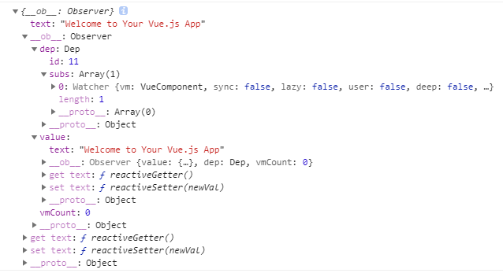

Vue响应式原理
主要是说明响应式对象是如何生成的，以及如何实现响应式。
Object.defineProperty
Object.defineProperty(obj, prop, descriptor)
参数
obj: 要在其上定义属性的对象。
prop: 要定义或修改的属性的名称。
descriptor: 将被定义或修改的属性描述符。
属性描述符
对象里目前存在的属性描述符有两种主要形式：数据描述符和存取描述符。数据描述符是一个具有值的属性，该值可能是可写的，也可能不是可写的。存取描述符是由getter-setter函数对描述的属性。描述符必须是这两种形式之一；不能同时是两者。
数据描述符和存取描述符均具有以下可选键值：
configurable: 当且仅当该属性的 configurable 为 true 时，该属性描述符才能够被改变，同时该属性也能从对应的对象上被删除。默认为 false。
enumerable: 当且仅当该属性的enumerable为true时，该属性才能够出现在对象的枚举属性中。默认为 false。
数据描述符同时具有以下可选键值：
value: 该属性对应的值。可以是任何有效的 JavaScript 值（数值，对象，函数等）。默认为 undefined。
writable: 当且仅当该属性的writable为true时，value才能被赋值运算符改变。默认为 false。
存取描述符同时具有以下可选键值：
get: 一个给属性提供 getter 的方法，如果没有 getter 则为 undefined。当访问该属性时，该方法会被执行，方法执行时没有参数传入，但是会传入this对象（由于继承关系，这里的this并不一定是定义该属性的对象）。默认为 undefined。
set：一个给属性提供 setter 的方法，如果没有 setter 则为 undefined。当属性值修改时，触发执行该方法。该方法将接受唯一参数，即该属性新的参数值。默认为 undefined。
观察者模式
 ;
;
目标和观察者是基类，目标提供维护观察者的一系列方法，观察者提供更新接口。具体观察者和具体目标继承各自的基类，然后具体观察者把自己注册到具体目标里，在具体目标发生变化时候，调度观察者的更新方法。
比如有个“天气中心”的具体目标A，专门监听天气变化，而有个显示天气的界面的观察者B，B就把自己注册到A里，当A触发天气变化，就调度B的更新方法，并带上自己的上下文。
发布/订阅模式
 ;
;
订阅者把自己想订阅的事件注册到调度中心，当该事件触发时候，发布者发布该事件到调度中心（顺带上下文），由调度中心统一调度订阅者注册到调度中心的处理代码。
比如有个界面是实时显示天气，它就订阅天气事件（注册到调度中心，包括处理程序），当天气变化时（定时获取数据），就作为发布者发布天气信息到调度中心，调度中心就调度订阅者的天气处理程序。
区别（调度的地方）
虽然两种模式都存在订阅者和发布者（具体观察者可认为是订阅者、具体目标可认为是发布者），但是观察者模式是由具体目标调度的，而发布/订阅模式是统一由调度中心调的，所以观察者模式的订阅者与发布者之间是存在依赖的，而发布/订阅模式则不会。
vue的构造函数
import { initMixin } from './init' import { stateMixin } from './state' import { renderMixin } from './render' import { eventsMixin } from './events' import { lifecycleMixin } from './lifecycle' import { warn } from '../util/index' function Vue (options) { if (process.env.NODE_ENV !== 'production' &&!(this instanceof Vue)) { warn('Vue is a constructor and should be called with the `new` keyword') } this._init(options) } initMixin(Vue) stateMixin(Vue) eventsMixin(Vue) lifecycleMixin(Vue) renderMixin(Vue) export default Vue
vue即为用function实现的类，其中的xxxMixin()一类方法，都是给它的原型prototype上扩展方法，体现了分模块实现思想。
_init
Vue.prototype._init = function (options?: Object) { const vm: Component = this // a uid vm._uid = uid++ let startTag, endTag /* istanbul ignore if */ if (process.env.NODE_ENV !== 'production' && config.performance && mark) { startTag = `vue-perf-start:${vm._uid}` endTag = `vue-perf-end:${vm._uid}` mark(startTag) } // a flag to avoid this being observed vm._isVue = true // merge options if (options && options._isComponent) { // optimize internal component instantiation // since dynamic options merging is pretty slow, and none of the // internal component options needs special treatment. initInternalComponent(vm, options) } else { vm.$options = mergeOptions( resolveConstructorOptions(vm.constructor), options || {}, vm ) } /* istanbul ignore else */ if (process.env.NODE_ENV !== 'production') { initProxy(vm) } else { vm._renderProxy = vm } // expose real self vm._self = vm initLifecycle(vm) initEvents(vm) initRender(vm) callHook(vm, 'beforeCreate') initInjections(vm) // resolve injections before data/props initState(vm) initProvide(vm) // resolve provide after data/props callHook(vm, 'created') /* istanbul ignore if */ if (process.env.NODE_ENV !== 'production' && config.performance && mark) { vm._name = formatComponentName(vm, false) mark(endTag) measure(`vue ${vm._name} init`, startTag, endTag) } if (vm.$options.el) { vm.$mount(vm.$options.el) } }
_init方法主要做了以下事情：合并配置、初始化生命周期、初始化事件中心、初始化渲染、初始化data、props、computed、watcher等。
initState
export function initState (vm: Component) { vm._watchers = [] const opts = vm.$options if (opts.props) initProps(vm, opts.props) if (opts.methods) initMethods(vm, opts.methods) if (opts.data) { initData(vm) } else { observe(vm._data = {}, true /* asRootData */) } if (opts.computed) initComputed(vm, opts.computed) if (opts.watch && opts.watch !== nativeWatch) { initWatch(vm, opts.watch) } }
initState ⽅法主要是对 props 、 methods 、 data 、 computed 和 wathcer 等属性做了初始化操作。我们先看 props 和 data。
initProps
function initProps (vm: Component, propsOptions: Object) { const propsData = vm.$options.propsData || {} const props = vm._props = {} // cache prop keys so that future props updates can iterate using Array // instead of dynamic object key enumeration. const keys = vm.$options._propKeys = [] const isRoot = !vm.$parent // root instance props should be converted if (!isRoot) { toggleObserving(false) } for (const key in propsOptions) { keys.push(key) const value = validateProp(key, propsOptions, propsData, vm) /* istanbul ignore else */ if (process.env.NODE_ENV !== 'production') { const hyphenatedKey = hyphenate(key) if (isReservedAttribute(hyphenatedKey) || config.isReservedAttr(hyphenatedKey)) { warn( `"${hyphenatedKey}" is a reserved attribute and cannot be used as component prop.`, vm ) } defineReactive(props, key, value, () => { if (vm.$parent && !isUpdatingChildComponent) { warn( `Avoid mutating a prop directly since the value will be ` + `overwritten whenever the parent component re-renders. ` + `Instead, use a data or computed property based on the prop's ` + `value. Prop being mutated: "${key}"`, vm ) } }) } else { defineReactive(props, key, value) } // static props are already proxied on the component's prototype // during Vue.extend(). We only need to proxy props defined at // instantiation here. if (!(key in vm)) { proxy(vm, `_props`, key) } } toggleObserving(true) }
props 的初始化主要过程，就是遍历定义的 props 配置。遍历的过程主要做两件事情：⼀个是调⽤ defineReactive ⽅法把每个 prop 对应的值变成响应式，可以通过 vm._props.xxx 访问到定义 props 中对应的属性。另⼀个是通过 proxy把 vm._props.xxx 的访问代理到 vm.xxx 上。这两个⽅法，我们稍后再看。
initData
function initData (vm: Component) { let data = vm.$options.data data = vm._data = typeof data === 'function' ? getData(data, vm) : data || {} if (!isPlainObject(data)) { data = {} process.env.NODE_ENV !== 'production' && warn( 'data functions should return an object:\n' + 'https://vuejs.org/v2/guide/components.html#data-Must-Be-a-Function', vm ) } // proxy data on instance const keys = Object.keys(data) const props = vm.$options.props const methods = vm.$options.methods let i = keys.length // data、props、methods里的所有属性都将直接挂载到vm上，不能同名 while (i--) { const key = keys[i] if (process.env.NODE_ENV !== 'production') { if (methods && hasOwn(methods, key)) { warn( `Method "${key}" has already been defined as a data property.`, vm ) } } if (props && hasOwn(props, key)) { process.env.NODE_ENV !== 'production' && warn( `The data property "${key}" is already declared as a prop. ` + `Use prop default value instead.`, vm ) // IsReserved，以 _ 或 $ 开头的属性 不会 被 Vue 实例代理，因为它们可能和 Vue 内置的属性、API 方法冲突。 } else if (!isReserved(key)) { proxy(vm, `_data`, key) } } // observe data observe(data, true /* asRootData */) }
data 的初始化主要过程也是做两件事，⼀个是对定义 data 函数返回对象的遍历，通过 proxy把每⼀个值 vm._data.xxx 都代理到 vm.xxx 上；另⼀个是调⽤ observe ⽅法观测整个 data的变化，把 data 也变成响应式，可以通过 vm._data.xxx 访问到定义 data 返回函数中对应的属性， observe 我们稍后再看。
proxy
proxy的作⽤是把 props 和 data 上的属性代理到 vm 实例上，这也就是为什么⽐如我们定义了如下 props，却可以通过 vm 实例访问到它。
... data() { return { msg: 'hello' } } ... methods: { getMsg() { console.log(this.msg) } }
看一下proxy方法
const sharedPropertyDefinition = { enumerable: true, configurable: true, get: noop, set: noop } export function proxy (target: Object, sourceKey: string, key: string) { sharedPropertyDefinition.get = function proxyGetter () { return this[sourceKey][key] } sharedPropertyDefinition.set = function proxySetter (val) { this[sourceKey][key] = val } Object.defineProperty(target, key, sharedPropertyDefinition) }
proxy 通过 Object.defineProperty 把 target[sourceKey][key] 的读写变成了对 target[key] 的读写。所以对于 props ⽽⾔，对 vm._props.xxx 的读写变成了vm.xxx 的读写，⽽对于 vm._props.xxx ,我们将到定义在 props 中的属性缓存到vm._props中，所以我们就可以通过 vm.xxx 访问到定义在 props 中的 xxx 属性了。其余同理。
observe
observe 的功能就是⽤来监测数据的变化
/** * Attempt to create an observer instance for a value, * returns the new observer if successfully observed, * or the existing observer if the value already has one. */ // asRootData判断是否是根数据 // initData中observe(data, true /* asRootData */) export function observe (value: any, asRootData: ?boolean): Observer | void { if (!isObject(value) || value instanceof VNode) { return } let ob: Observer | void if (hasOwn(value, '__ob__') && value.__ob__ instanceof Observer) { ob = value.__ob__ } else if ( shouldObserve && !isServerRendering() && (Array.isArray(value) || isPlainObject(value)) && Object.isExtensible(value) && !value._isVue ) { ob = new Observer(value) } if (asRootData && ob) { ob.vmCount++ } return ob }
observe ⽅法的作⽤就是给⾮ VNode 的对象类型数据添加⼀个 Observer ，如果已经添加过则直接返回，否则在满⾜⼀定条件下去实例化⼀个 Observer 对象实例。
Observer
Observer 是⼀个类，它的作⽤是给对象的属性添加 getter 和 setter，⽤于依赖收集和派发更新
/** * Observer class that is attached to each observed * object. Once attached, the observer converts the target * object's property keys into getter/setters that * collect dependencies and dispatch updates. */ export class Observer { value: any; dep: Dep; vmCount: number; // number of vms that has this object as root $data constructor (value: any) { this.value = value this.dep = new Dep() this.vmCount = 0 def(value, '__ob__', this) if (Array.isArray(value)) { const augment = hasProto ? protoAugment : copyAugment augment(value, arrayMethods, arrayKeys) this.observeArray(value) } else { this.walk(value) } } /** * Walk through each property and convert them into * getter/setters. This method should only be called when * value type is Object. */ walk (obj: Object) { const keys = Object.keys(obj) for (let i = 0; i < keys.length; i++) { defineReactive(obj, keys[i]) } } /** * Observe a list of Array items. */ observeArray (items: Array<any>) { for (let i = 0, l = items.length; i < l; i++) { observe(items[i]) } } }
Observer 的构造函数逻辑很简单，⾸先实例化 Dep 对象，这块稍后会介绍，接着通过执⾏ def函数把⾃⾝实例添加到数据对象 value 的 __ob__属性上，我们看一下def函数。
/** * Define a property. */ export function def (obj: Object, key: string, val: any, enumerable?: boolean) { Object.defineProperty(obj, key, { value: val, enumerable: !!enumerable, writable: true, configurable: true }) }
def 函数是⼀个⾮常简单的 Object.defineProperty 的封装，这就是为什么我在开发中输出data 上对象类型的数据，会发现该对象多了⼀个 __ob__ 的属性,如下图:

defineReactive
/** * Define a reactive property on an Object. */ export function defineReactive ( obj: Object, key: string, val: any, customSetter?: ?Function, shallow?: boolean ) { const dep = new Dep() const property = Object.getOwnPropertyDescriptor(obj, key) if (property && property.configurable === false) { return } // cater for pre-defined getter/setters const getter = property && property.get const setter = property && property.set if ((!getter || setter) && arguments.length === 2) { val = obj[key] } // 递归调用observe，某个对象的属性值是对象时，会递归调用observe let childOb = !shallow && observe(val) Object.defineProperty(obj, key, { enumerable: true, configurable: true, get: function reactiveGetter () { const value = getter ? getter.call(obj) : val if (Dep.target) { dep.depend() if (childOb) { childOb.dep.depend() if (Array.isArray(value)) { dependArray(value) } } } return value }, set: function reactiveSetter (newVal) { const value = getter ? getter.call(obj) : val /* eslint-disable no-self-compare */ if (newVal === value || (newVal !== newVal && value !== value)) { return } /* eslint-enable no-self-compare */ if (process.env.NODE_ENV !== 'production' && customSetter) { customSetter() } if (setter) { setter.call(obj, newVal) } else { val = newVal } childOb = !shallow && observe(newVal) dep.notify() } }) }
defineReactive 函数最开始初始化 Dep 对象的实例，接着拿到 obj 的属性描述符，然后对⼦对象递归调⽤ observe ⽅法，这样就保证了⽆论 obj 的结构多复杂，它的所有⼦属性也能变成响应式的对象，这样我们访问或修改 obj 中⼀个嵌套较深的属性，也能触发 getter 和 setter。最后利⽤Object.defineProperty 去给 obj 的属性 key 添加 getter 和 setter。
依赖收集
1.const dep = new Dep() 实例化⼀个 Dep 的实例
2.dep.depend
3.childObj 判断的逻辑(给Vue.set方法使用)
Dep
import type Watcher from './watcher' import { remove } from '../util/index' import config from '../config' let uid = 0 export default class Dep { static target: ?Watcher; id: number; subs: Array<Watcher>; constructor () { this.id = uid++ this.subs = [] } addSub (sub: Watcher) { this.subs.push(sub) } removeSub (sub: Watcher) { remove(this.subs, sub) } depend () { if (Dep.target) { Dep.target.addDep(this) } } notify () { // stabilize the subscriber list first const subs = this.subs.slice() if (process.env.NODE_ENV !== 'production' && !config.async) { // subs aren't sorted in scheduler if not running async // we need to sort them now to make sure they fire in correct // order subs.sort((a, b) => a.id - b.id) } for (let i = 0, l = subs.length; i < l; i++) { subs[i].update() } } } // the current target watcher being evaluated. // this is globally unique because there could be only one // watcher being evaluated at any time. Dep.target = null const targetStack = [] export function pushTarget (_target: ?Watcher) { if (Dep.target) targetStack.push(Dep.target) Dep.target = _target } export function popTarget () { Dep.target = targetStack.pop() }
1.它有⼀个静态属性 target ，这是⼀个全局唯⼀Watcher，因为在同⼀时间只能有⼀个全局的Watcher 被计算。
2.subs是存储Watcher的数组。
Dep其实就是为了管理Watcher
Watcher
import { warn, remove, isObject, parsePath, _Set as Set, handleError } from '../util/index' import { traverse } from './traverse' import { queueWatcher } from './scheduler' import Dep, { pushTarget, popTarget } from './dep' import type { SimpleSet } from '../util/index' let uid = 0 /** * A watcher parses an expression, collects dependencies, * and fires callback when the expression value changes. * This is used for both the $watch() api and directives. */ export default class Watcher { vm: Component; expression: string; cb: Function; id: number; deep: boolean; user: boolean; lazy: boolean; sync: boolean; dirty: boolean; active: boolean; deps: Array<Dep>; newDeps: Array<Dep>; depIds: SimpleSet; newDepIds: SimpleSet; before: ?Function; getter: Function; value: any; constructor ( vm: Component, expOrFn: string | Function, cb: Function, options?: ?Object, isRenderWatcher?: boolean ) { this.vm = vm if (isRenderWatcher) { vm._watcher = this } vm._watchers.push(this) // options if (options) { this.deep = !!options.deep this.user = !!options.user this.lazy = !!options.lazy this.sync = !!options.sync this.before = options.before } else { this.deep = this.user = this.lazy = this.sync = false } this.cb = cb this.id = ++uid // uid for batching this.active = true this.dirty = this.lazy // for lazy watchers this.deps = [] this.newDeps = [] this.depIds = new Set() this.newDepIds = new Set() this.expression = process.env.NODE_ENV !== 'production' ? expOrFn.toString() : '' // parse expression for getter if (typeof expOrFn === 'function') { this.getter = expOrFn } else { this.getter = parsePath(expOrFn) if (!this.getter) { this.getter = function () {} process.env.NODE_ENV !== 'production' && warn( `Failed watching path: "${expOrFn}" ` + 'Watcher only accepts simple dot-delimited paths. ' + 'For full control, use a function instead.', vm ) } } this.value = this.lazy ? undefined : this.get() } /** * Evaluate the getter, and re-collect dependencies. */ get () { pushTarget(this) let value const vm = this.vm try { value = this.getter.call(vm, vm) } catch (e) { if (this.user) { handleError(e, vm, `getter for watcher "${this.expression}"`) } else { throw e } } finally { // "touch" every property so they are all tracked as // dependencies for deep watching if (this.deep) { traverse(value) } popTarget() this.cleanupDeps() } return value } /** * Add a dependency to this directive. */ addDep (dep: Dep) { const id = dep.id if (!this.newDepIds.has(id)) { this.newDepIds.add(id) this.newDeps.push(dep) if (!this.depIds.has(id)) { dep.addSub(this) } } } /** * Clean up for dependency collection. */ cleanupDeps () { let i = this.deps.length while (i--) { const dep = this.deps[i] if (!this.newDepIds.has(dep.id)) { dep.removeSub(this) } } let tmp = this.depIds this.depIds = this.newDepIds this.newDepIds = tmp this.newDepIds.clear() tmp = this.deps this.deps = this.newDeps this.newDeps = tmp this.newDeps.length = 0 } /** * Subscriber interface. * Will be called when a dependency changes. */ update () { /* istanbul ignore else */ if (this.lazy) { this.dirty = true } else if (this.sync) { this.run() } else { queueWatcher(this) } } /** * Scheduler job interface. * Will be called by the scheduler. */ run () { if (this.active) { const value = this.get() if ( value !== this.value || // Deep watchers and watchers on Object/Arrays should fire even // when the value is the same, because the value may // have mutated. isObject(value) || this.deep ) { // set new value const oldValue = this.value this.value = value if (this.user) { try { this.cb.call(this.vm, value, oldValue) } catch (e) { handleError(e, this.vm, `callback for watcher "${this.expression}"`) } } else { this.cb.call(this.vm, value, oldValue) } } } } /** * Evaluate the value of the watcher. * This only gets called for lazy watchers. */ evaluate () { this.value = this.get() this.dirty = false } /** * Depend on all deps collected by this watcher. */ depend () { let i = this.deps.length while (i--) { this.deps[i].depend() } } /** * Remove self from all dependencies' subscriber list. */ teardown () { if (this.active) { // remove self from vm's watcher list // this is a somewhat expensive operation so we skip it // if the vm is being destroyed. if (!this.vm._isBeingDestroyed) { remove(this.vm._watchers, this) } let i = this.deps.length while (i--) { this.deps[i].removeSub(this) } this.active = false } } }
定义了一些和Dep相关的属性
this.deps = [] this.newDeps = [] this.depIds = new Set() this.newDepIds = new Set()
this.deps 和 this.newDeps 表⽰ Watcher 实例持有的 Dep 实例的数组；⽽this.depIds 和 this.newDepIds 分别代表 this.deps 和 this.newDeps 的 id Set（这个Set 是 ES6 的数据结构，它的实现在 src/core/util/env.js 中）。那么这⾥为何需要有 2 个 Dep实例数组呢，稍后我们会解释。
Watcher 还定义了⼀些原型的⽅法，和依赖收集相关的有 get 、 addDep 和 cleanupDeps ⽅法。
接下来会从整个依赖收集过程中逐步分析这些方法。
在mounted的过程中,有这么一段话：
updateComponent = () => { vm._update(vm._render(), hydrating) } new Watcher(vm, updateComponent, noop, { before () { if (vm._isMounted) { callHook(vm, 'beforeUpdate') } } }, true /* isRenderWatcher */)
回顾一下实例化渲染watcher的过程
构造函数中有2个比较重要的点：
vm._watchers.push(this)this.get()
get()
pushTarget(this)
定义在Dep中
export function pushTarget (_target: Watcher) { if (Dep.target) targetStack.push(Dep.target) Dep.target = _target }
实际上就是把 Dep.target 赋值为当前的渲染 watcher 并压栈（为了恢复⽤）。接着⼜执⾏了：
value = this.getter.call(vm, vm)
this.getter 对应就是 updateComponent 函数，这实际上就是在执⾏：
vm._update(vm._render(), hydrating)
它会先执⾏ vm._render() ⽅法，因为这个⽅法会⽣成 渲染 VNode(ps：稍微提一下，不是本次主题的内容)，并且在这个过程中会对 vm 上的数据访问，这个时候就触发了数据对象的 getter。
那么每个对象值的 getter 都持有⼀个 dep ，在触发 getter 的时候会调⽤ dep.depend() ⽅法，也就会执⾏ Dep.target.addDep(this) 。
addDep (dep: Dep) { const id = dep.id if (!this.newDepIds.has(id)) { this.newDepIds.add(id) this.newDeps.push(dep) if (!this.depIds.has(id)) { dep.addSub(this) } } }
addSub (sub: Watcher) { this.subs.push(sub) }
这时候会做⼀些逻辑判断（保证同⼀数据不会被添加多次）后执⾏ dep.addSub(this) ，那么就会执⾏ this.subs.push(sub) ，也就是说把当前的 watcher 订阅到这个数据持有的 dep 的 subs 中，这个⽬的是为后续数据变化时候能通知到哪些 subs 做准备。
所以在 vm._render() 过程中，会触发所有数据的 getter，这样实际上已经完成了⼀个依赖收集的过程。那么到这⾥就结束了么，其实并没有，再完成依赖收集后，还有⼏个逻辑要执⾏，⾸先是：
if (this.deep) { traverse(value) }
这个是要递归去访问 value ，触发它所有⼦项的 getter ，这个之后会详细讲。然后执行
popTarget()
popTarget定义在dep中:
Dep.target = targetStack.pop()
实际上就是把 Dep.target 恢复成上⼀个状态，因为当前 vm 的数据依赖收集已经完成，那么对应的渲染 Dep.target 也需要改变。
最后执行
this.cleanupDeps()
cleanupDeps () { let i = this.deps.length while (i--) { const dep = this.deps[i] if (!this.newDepIds.has(dep.id)) { dep.removeSub(this) } } let tmp = this.depIds this.depIds = this.newDepIds this.newDepIds = tmp this.newDepIds.clear() tmp = this.deps this.deps = this.newDeps this.newDeps = tmp this.newDeps.length = 0 }
考虑到 Vue 是数据驱动的，所以每次数据变化都会重新 render，那么 vm._render() ⽅法⼜会再次执⾏，并再次触发数据的 getters，所以 Wathcer 在构造函数中会初始化 2 个 Dep 实例数组， newDeps 表⽰新添加的 Dep 实例数组，⽽ deps 表⽰上⼀次添加的 Dep 实例数组。
在执⾏ cleanupDeps 函数的时候，会⾸先遍历 deps ，移除对 dep 的订阅，然后把 newDepIds和 depIds 交换， newDeps 和 deps 交换，并把 newDepIds 和 newDeps 清空。
那么为什么需要做 deps 订阅的移除呢，在添加 deps 的订阅过程，已经能通过 id 去重避免重复订阅了。
考虑到⼀种场景，我们的模板会根据 v-if 去渲染不同⼦模板 a 和 b，当我们满⾜某种条件的时候渲染 a 的时候，会访问到 a 中的数据，这时候我们对 a 使⽤的数据添加了 getter，做了依赖收集，那么当我们去修改 a 的数据的时候，理应通知到这些订阅者。那么如果我们⼀旦改变了条件渲染了 b 模板，⼜会对 b 使⽤的数据添加了 getter，如果我们没有依赖移除的过程，那么这时候我去修改 a 模板的数据，会通知 a 数据的订阅的回调，这显然是有浪费的。
因此 Vue 设计了在每次添加完新的订阅，会移除掉旧的订阅，这样就保证了在我们刚才的场景中，如果渲染 b 模板的时候去修改 a 模板的数据，a 数据订阅回调已经被移除了，所以不会有任何浪费。
派发更新
回顾一下setter
/** * Define a reactive property on an Object. */ export function defineReactive ( obj: Object, key: string, val: any, customSetter?: ?Function, shallow?: boolean ) { const dep = new Dep() const property = Object.getOwnPropertyDescriptor(obj, key) if (property && property.configurable === false) { return } // cater for pre-defined getter/setters const getter = property && property.get const setter = property && property.set if ((!getter || setter) && arguments.length === 2) { val = obj[key] } // 递归调用observe，某个对象的属性值是对象时，会递归调用observe let childOb = !shallow && observe(val) Object.defineProperty(obj, key, { enumerable: true, configurable: true, get: function reactiveGetter () { const value = getter ? getter.call(obj) : val if (Dep.target) { dep.depend() if (childOb) { childOb.dep.depend() if (Array.isArray(value)) { dependArray(value) } } } return value }, set: function reactiveSetter (newVal) { const value = getter ? getter.call(obj) : val /* eslint-disable no-self-compare */ if (newVal === value || (newVal !== newVal && value !== value)) { return } /* eslint-enable no-self-compare */ if (process.env.NODE_ENV !== 'production' && customSetter) { customSetter() } if (setter) { setter.call(obj, newVal) } else { val = newVal } childOb = !shallow && observe(newVal) dep.notify() } }) }
- childOb = !shallow && observe(newVal) ，如果 shallow为 false 的情况，会对新设置的值变成⼀个响应式对象
- 另⼀个是 dep.notify() ，通知所有的订阅者
过程分析
class Dep { // ... notify () { // stabilize the subscriber list first const subs = this.subs.slice() for (let i = 0, l = subs.length; i < l; i++) { subs[i].update() } } }
遍历所有的 subs ，也就是 Watcher 的实例数组，然后调⽤每⼀个watcher 的 update ⽅法
class Watcher { // ... update () { /* istanbul ignore else */ if (this.computed) { // A computed property watcher has two modes: lazy and activated. // It initializes as lazy by default, and only becomes activated when // it is depended on by at least one subscriber, which is typically // another computed property or a component's render function. if (this.dep.subs.length === 0) { // In lazy mode, we don't want to perform computations until necessary, // so we simply mark the watcher as dirty. The actual computation is // performed just-in-time in this.evaluate() when the computed property // is accessed. this.dirty = true } else { // In activated mode, we want to proactively perform the computation // but only notify our subscribers when the value has indeed changed. this.getAndInvoke(() => { this.dep.notify() }) } } else if (this.sync) { this.run() } else { queueWatcher(this) } } }
对于 Watcher 的不同状态，会执⾏不同的逻辑， computed 和 sync 的分支跳过，在⼀般组件数据更新的场景，会⾛到最后⼀个 queueWatcher(this) 的逻辑
const queue: Array<Watcher> = [] let has: { [key: number]: ?true } = {} let waiting = false let flushing = false /** * Push a watcher into the watcher queue. * Jobs with duplicate IDs will be skipped unless it's * pushed when the queue is being flushed. */ export function queueWatcher (watcher: Watcher) { const id = watcher.id if (has[id] == null) { has[id] = true if (!flushing) { queue.push(watcher) } else { // if already flushing, splice the watcher based on its id // if already past its id, it will be run next immediately. let i = queue.length - 1 while (i > index && queue[i].id > watcher.id) { i-- } queue.splice(i + 1, 0, watcher) } // queue the flush if (!waiting) { waiting = true nextTick(flushSchedulerQueue) } } }
这⾥引⼊了⼀个队列的概念，这也是 Vue 在做派发更新的时候的⼀个优化的点，它并不会每次数据改变都触发 watcher 的回调，⽽是把这些 watcher 先添加到⼀个队列⾥，然后在 nextTick 后执⾏ flushSchedulerQueue 。
⾸先⽤ has 对象保证同⼀个 Watcher 只添加⼀次；接着对flushing 的判断，else 部分为分支逻辑，不做详细说明；最后通过 wating 保证对nextTick(flushSchedulerQueue) 的调⽤逻辑只有⼀次。
function flushSchedulerQueue () { flushing = true; var watcher, id; // Sort queue before flush. // This ensures that: // 1. Components are updated from parent to child. (because parent is always // created before the child) // 2. A component's user watchers are run before its render watcher (because // user watchers are created before the render watcher) // 3. If a component is destroyed during a parent component's watcher run, // its watchers can be skipped. queue.sort(function (a, b) { return a.id - b.id; }); // do not cache length because more watchers might be pushed // as we run existing watchers for (index = 0; index < queue.length; index++) { watcher = queue[index]; if (watcher.before) { watcher.before(); } id = watcher.id; has[id] = null; watcher.run(); // in dev build, check and stop circular updates. if ("development" !== 'production' && has[id] != null) { circular[id] = (circular[id] || 0) + 1; if (circular[id] > MAX_UPDATE_COUNT) { warn( 'You may have an infinite update loop ' + ( watcher.user ? ("in watcher with expression \"" + (watcher.expression) + "\"") : "in a component render function." ), watcher.vm ); break } } } // keep copies of post queues before resetting state var activatedQueue = activatedChildren.slice(); var updatedQueue = queue.slice(); resetSchedulerState(); // call component updated and activated hooks callActivatedHooks(activatedQueue); callUpdatedHooks(updatedQueue); // devtool hook /* istanbul ignore if */ if (devtools && config.devtools) { devtools.emit('flush'); } }
flushSchedulerQueue里会执行队列排序、队列遍历、状态恢复的过程
队列排序
queue.sort((a, b) => a.id - b.id) 对队列做了从⼩到⼤的排序，这么做主要有以下要确保以下⼏点：
- 组件的更新由⽗到⼦；因为⽗组件的创建过程是先于⼦的，所以 watcher 的创建也是先⽗后⼦，执⾏顺序也应该保持先⽗后⼦。
- ⽤户的⾃定义 watcher 要优先于渲染 watcher 执⾏；因为⽤户⾃定义 watcher 是在渲染 watcher 之前创建的。
- 如果⼀个组件在⽗组件的 watcher 执⾏期间被销毁，那么它对应的 watcher 执⾏都可以被跳过，所以⽗组件的 watcher 应该先执⾏。
队列遍历
export function queueWatcher (watcher: Watcher) { const id = watcher.id if (has[id] == null) { has[id] = true if (!flushing) { queue.push(watcher) } else { // if already flushing, splice the watcher based on its id // if already past its id, it will be run next immediately. let i = queue.length - 1 while (i > index && queue[i].id > watcher.id) { i-- } queue.splice(i + 1, 0, watcher) } // ... } }
遍历执行watcher.run()
watcher.run()
class Watcher { /** * * Scheduler job interface. * Will be called by the scheduler. */ run () { if (this.active) { this.getAndInvoke(this.cb) } } getAndInvoke (cb: Function) { const value = this.get() if ( value !== this.value || // Deep watchers and watchers on Object/Arrays should fire even // when the value is the same, because the value may // have mutated. isObject(value) || this.deep ) { // set new value const oldValue = this.value this.value = value this.dirty = false if (this.user) { try { cb.call(this.vm, value, oldValue) } catch (e) { handleError(e, this.vm, `callback for watcher "${this.expression}"`) } } else { cb.call(this.vm, value, oldValue) } } } }
run 函数实际上就是执⾏ this.getAndInvoke ⽅法，并传⼊ watcher 的回调函数。 getAndInvoke 函数逻辑也很简单，先通过 this.get() 得到它当前的值，然后做判断，如果满⾜新旧值不等、新值是对象类型、 deep 模式任何⼀个条件，则执⾏ watcher 的回调，注意回调函数执⾏的时候会把第⼀个和第⼆个参数传⼊新值 value 和旧值 oldValue ，这就是当我们添加⾃定义 watcher 的时候能在回调函数的参数中拿到新旧值的原因。
那么对于渲染 watcher ⽽⾔，它在执⾏ this.get() ⽅法求值的时候，会执⾏ getter ⽅法：
updateComponent = () => { vm._update(vm._render(), hydrating) }
最终会执行vm._update()方法进行DOM的更新，关于响应式对象的分析就到这里结束了，想走一遍流程的可以自己去打断点研究一下，断点打在node_modules/vue/dist/vue.esm.js文件中，可以从initData开始。